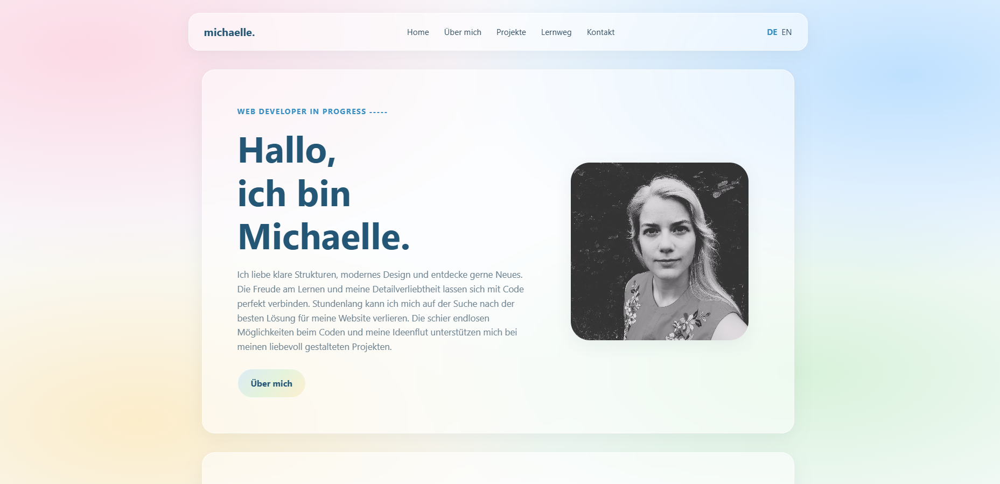

LEARNING BY DOING -----
Meine Projekte
Ein Einblick in meine bisherigen Arbeiten, einefachere Projekte und viele tolle Ideen lassen sich hier finden.

Die erste Website
Mein Porfolio
Ideen, Projekte und Bewerbungsgrundlage
Als mein erstes größeres eigenes Projekt habe ich meine persönliche Website erstellt. Seit Juli 2025 gestalte, erweitere und überarbeite ich sie laufend. Was zunächst als Möglichkeit begann, meine ersten HTML- und CSS-Kenntnisse praktisch anzuwenden, hat sich mit der Zeit zu einem umfangreicheren Projekt entwickelt, das meinen Lernweg sehr gut wiederspiegelt. Gleichzeitig dient mir die Website als digitale Visitenkarte und als Grundlage für meine zukünftigen Bewerbungen.
Version 1
Die erste Version erstellte ich kurz nach meinem Start mit der Lernwebsite "freecodecamp.com". Eine komplette Liste aller bisherigen Freecodecamp Projekte wurde nach und nach hinzugefügt und später wieder wegen mangelnder Relevanz entfernt. Außerdem habe ich meine Ideen, wichtigen Links und meine ersten Projekte gespeichert.
Version 2
Die nächste Version bekahm ein tolles Update. Ich hatte gerade das Linear-Gradient entdeckt und sogleich meinen Lieblingshintergrund gefunden. Ich habe bereits ein Navigationselement entworfen und meinen Lebenslauf schriftlich festgehalten.
Version 3 - Aktuell
Die momentane Version habe ich in Zusammenarbeit mit ChatGPT entworfen. Das alte Design war mir zu 2000 und ein moderner neuer Look sollte meinen Stil repräsentieren. Die neue Website bekam eine komplett neue Navigation, einen übersichtlichen Aufbau und ein Impressum.

Auftrag 01
ASO Mattighofen
Neugestaltung einer Schulwebsite
Eine bestehende Website vollständig neu zu programmieren, war meine erste größere praktische Herausforderung in der Webentwicklung. Das Projekt entstand aus dem Wunsch der Schule nach einem modernen und übersichtlichen Internetauftritt, für dessen Umsetzung zunächst weder das nötige Budget noch das technische Wissen vorhanden waren.
Mein Ziel war es, eine benutzerfreundliche und möglichst barrierefreie Website zu entwickeln, die den Schulalltag, das Team und die verschiedenen Angebote übersichtlich präsentiert.
Planung und Umsetzung
Zu Beginn verschaffte ich mir einen Überblick über die bestehende Website welche über Jimdo veröffentlicht wurde und technisch nicht zugänglich war. Diese dienten als Grundlage für die neue Seitenstruktur welche von der Schule sehr genau vorgegeben wurde. Anschließend entwickelte ich ein eigenes Gestaltungskonzept mit einer übersichtlichen Navigation, einer einheitlichen Farbgestaltung passend zum Logo und einem modernen, freundlichen Erscheinungsbild.
Bei der Umsetzung legte ich besonderen Wert auf eine klare Struktur, einfache Bedienbarkeit und ein responsives Design, damit die Website auf unterschiedlichen Geräten gut funktioniert. Neben der Gestaltung und technischen Entwicklung beschäftigte ich mich auch mit der Barrierefreiheit, welche von der Schule besonders gewünscht wurde.
Die gesamte Website entstand eigenständig mit HTML, CSS und JavaScript. Für die Veröffentlichung und Bereitstellung nutzte ich GitHub Pages. Zur Entwicklung des Designs, Prüfung von rechtlichen Rahmenbedingungen und zur Fehleranalyse benutzte ich zusätzlich ChatGPT.
Barrierefreiheit
Ein besonderer Schwerpunkt bei der Entwicklung war die Barrierefreiheit. Die Website sollte möglichst unkomplizierten Zugang zu den Informationen ermöglichen. Deshalb achtete ich auf eine gut lesbare Gestaltung, ausreichende Kontraste, eine übersichtliche Navigation und eine möglichst einfache Bedienung. Ergänzend entwickelte ich Funktionen wie Vorlesen sowie das Vergrößern und Verkleinern der Schrift. Auf Ausschmückungen, großflächige Bilder und bunte Hintergründe habe ich auch aus diesem Grund verzichtet.
Das aktuelle Fazit
Die Website ist mittlerweile weitgehend fertig. Ob sie tatsächlich die neue Schulwebsite wird, ist allerdings noch offen. Vorher müssen noch einige Dinge geklärt werden, vor allem wie die Mitarbeiter die Inhalte künftig selbst bearbeiten können und wer sich um Wartung und technischen Support kümmert. Ein CMS wäre dafür eine mögliche Lösung, mit der ich mich eventuell noch beschäftigen möchte. Auch die finanziellen Rahmenbedingungen für den zukünftigen Betrieb sind noch nicht geklärt. Für mich war das Projekt jedenfalls eine spannende Möglichkeit, mein bisheriges Wissen praktisch anzuwenden und dabei weit über das hinauszugehen, was ich zu diesem Zeitpunkt bereits gelernt hatte.
Zur Website →Rezeptsammlung und mein Bausteinsystem
Kochen mit Michaelle
Projektarbeit mit anderem Stil
Um meine Kenntnisse zu vertiefen und auch eine weitere Website für mein Portfolio zu haben, erstellte ich eine Kochwebsite mit eigenen Ideen und einenen Fotos für komplette Kochanfänger. Auf die Idee hat mich eine Freundin und mein Bruder gebracht, weil sie mich fragten welche gesunden Gerichte sich schnell und einfach zaubern lassen.
Version 1
Die erste Version erstellte ich im November 2025. Ich koche gerne und habe mich besonders in der Kleinkindphase meiner beiden Kinder sehr intensiv mit gesunder Ernährung beschäftigt. Viele Menschen in meinem Freundes- und Verwandtenkreis haben mich schon oft und gerne zum Essen besucht und häufig nach den Rezepten gefragt. Daher fiel es mir nicht schwer, geeignete Rezepte zu finden und kreierte sogar ein Konzept mit dem sich ganz einfach Pfannengerichte nach einem Baussteinsystem kochen lassen.
Version 2
Das Design war zwar noch sehr überschaubar, jedoch begann ich die Website immer mehr zu erweitern und viele neue Rezepte hinzuzufügen. Einige Fotos und auch genauere Erklärungen von Gesunder Ernährung wurden ergänzt. Natürlich habe ich mich auf die Ernährungsempfehlungen der AGES und der DGE bezogen.
Version 3 - Aktuell
Gerade bekommt die Website ein neues Design. Bald werde ich sie hier verlinken und vorstellen.
Zur Website →Zukunftsmusik
Es gibt noch einige Ideen die ich verwirklichen möchte:
- Website in English
- Formulare für Anregungen und Kommentare
- Kontaktformular
- Quizze und Lernspiele für meine Kinder
- Bücherlog mit Visualisierung des Fortschrittes, Ziele, random Vorschläge, local storage